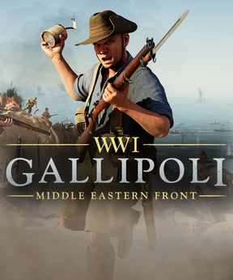
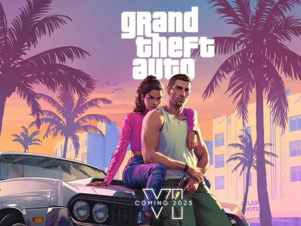
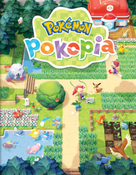
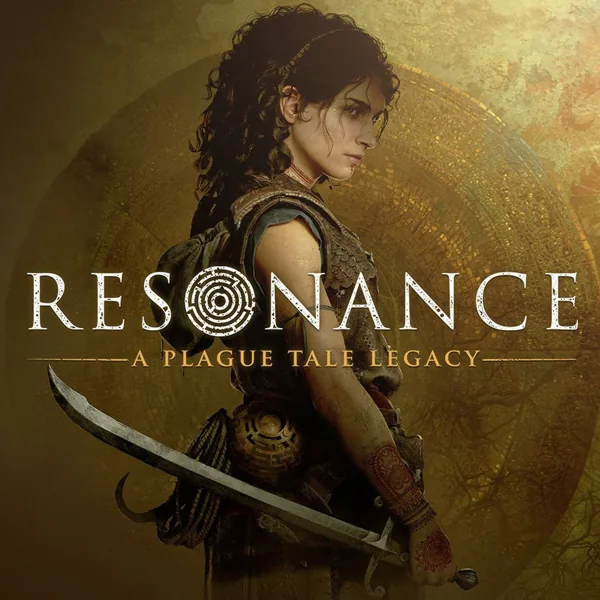

Games op deze pagina
- Forza Horizon 6
- WW1: Gallipoli
- Grand Theft Auto VI
- Pokemon Pokopia
- Resonance: A Plague Tale Legacy
Forza Horizon 6

Release & platform
Datum: 19 mei 2026
Platform: Xbox Series X/S, pc en PlayStation 5
Forza Horizon 6 is een openwereld-racegame die zich afspeelt in Japan. Spelers
kunnen alleen rijden of samen met anderen racen in een grote, afwisselende wereld.
WW1: Gallipoli

Release & platform
Datum: nog niet bekend
Platform: pc en consoles
WW1: Gallipoli is een historische first-person shooter over de Slag om Gallipoli
tijdens de Eerste Wereldoorlog. De game richt zich op gevechten, samenwerking en
historische locaties.
Grand Theft Auto VI

Release & platform
Datum: 19 november 2026
Platform: PlayStation 5 en Xbox Series X/S
Grand Theft Auto VI speelt zich af in de staat Leonida, met Vice City als belangrijk middelpunt. Het verhaal volgt Jason en Lucia tijdens hun avonturen in een moderne, fictieve versie van Florida.
Pokemon Pokopia

Release & platform
Datum: 5 maart 2026
Platform: Nintendo Switch 2
In Pokemon Pokopia speel je als een Ditto die de vorm van een mens aanneemt. Je bouwt een eigen leefomgeving, verzamelt grondstoffen en werkt samen met Pokemon om de wereld opnieuw op te bouwen.
Resonance: A Plague Tale Legacy

Release & platform
Datum: 2026
Platform: pc, PlayStation 5 en Xbox Series X/S
Resonance: A Plague Tale Legacy is een actie-avonturenspel in de wereld van A Plague Tale. Het verhaal speelt zich af in het Frankrijk van de veertiende eeuw, waar overleven, sluipen en het oplossen van raadsels centraal staan.
Meer informatie vind je op de officiele website van ign, waar ik mijn informatie vandaan haal.